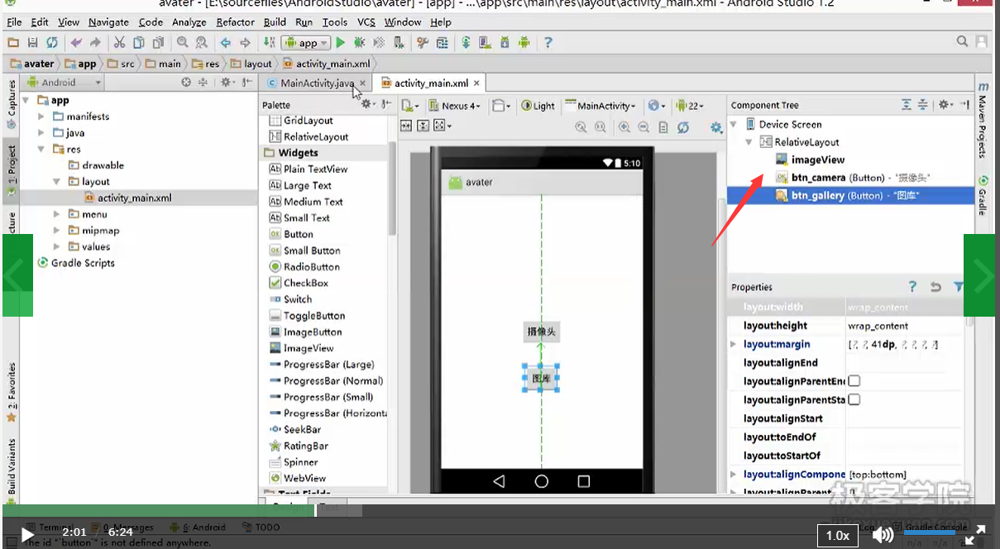
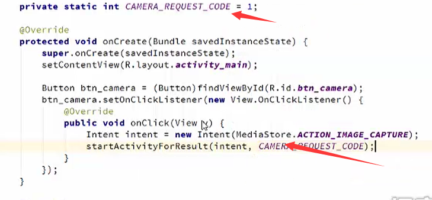
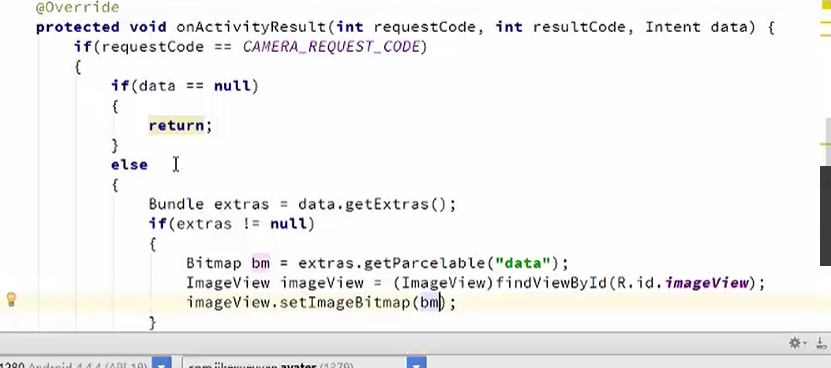
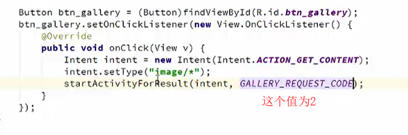
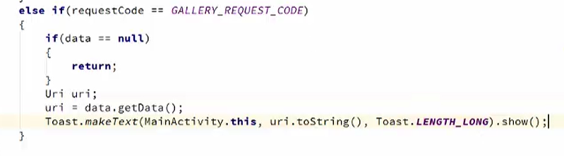
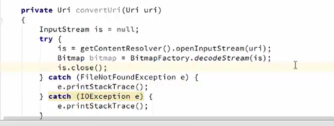
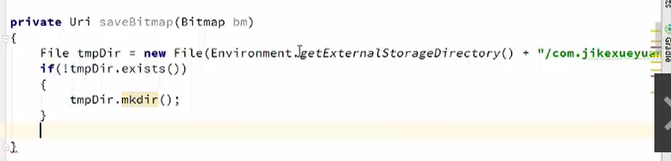
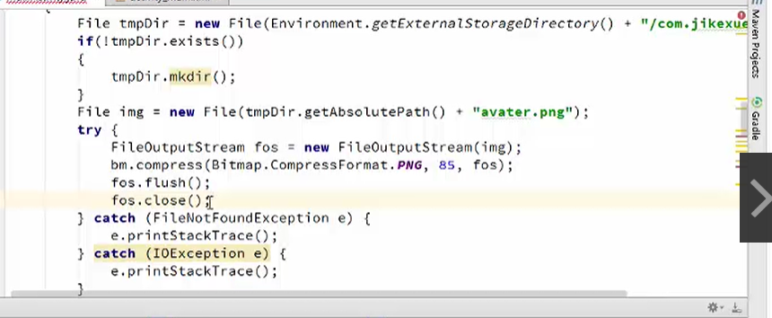
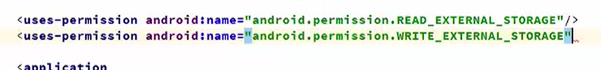

添加控件

添加打开相机代码
button.setOnClickListener(object:View.OnClickListener{
override fun onClick(v: View?) {
startActivityForResult(Intent(MediaStore.ACTION_IMAGE_CAPTURE),1)
}
})
override fun onActivityResult(requestCode: Int, resultCode: Int, data: Intent?) {
//super.onActivityResult(requestCode, resultCode, data)
if(requestCode==1){
if(data==null) {
return
}
else {
var extras=data.extras
if(extras!=null){
imageView.setImageBitmap(data.getParcelableExtra("data"))
}
}
}
super.onActivityResult(requestCode, resultCode, data)
}

拍照数据的处理

新的小节-从图库中获取图像
button2.setOnClickListener(object:View.OnClickListener{
override fun onClick(v: View?) {
var intent=Intent(Intent.ACTION_GET_CONTENT)
intent.type="image*/"
startActivityForResult(intent,2)
}
})


新建一个方法

把图片存到SD卡


权限

在 Android 上对图像进行裁剪
class MainActivity : AppCompatActivity() {
override fun onCreate(savedInstanceState: Bundle?) {
super.onCreate(savedInstanceState)
setContentView(R.layout.activity_main)
button2.setOnClickListener(object:View.OnClickListener{
override fun onClick(v: View?) {
var intent=Intent(Intent.ACTION_GET_CONTENT)
intent.type="image*/"
startActivityForResult(intent,2)
}
})
button.setOnClickListener(object:View.OnClickListener{
override fun onClick(v: View?) {
startActivityForResult(Intent(MediaStore.ACTION_IMAGE_CAPTURE),1)
}
})
}
override fun onActivityResult(requestCode: Int, resultCode: Int, data: Intent?) {
if(requestCode==1){
if(data==null) {
return
} else {
var extras=data.extras
if(extras!=null){
//imageView.setImageBitmap(data.getParcelableExtra("data"))
var bm:Bitmap? =extras.getParcelable("data")
var uri:Uri?=saveBitmap(bm)
startImageZoom(uri)
}
}
}else if(requestCode==2){
if(data==null){
return
}
var uri=data.data
var uri2:Uri?= uri?.let { convertUri(it) }
startImageZoom(uri2)
}
else if(requestCode==3){
if(data==null){
return
}
var extras:Bundle?=data.extras
if(extras!=null) {
var bm: Bitmap? = extras.getParcelable("data")
imageView.setImageBitmap(bm)
}
}
super.onActivityResult(requestCode, resultCode, data)
}
fun convertUri(uri: Uri) :Uri?{
var is1:InputStream;
is1= getContentResolver().openInputStream(uri)!!
var bm:Bitmap=BitmapFactory.decodeStream(is1)
is1.close()
return saveBitmap(bm)
}
public fun saveBitmap(bm:Bitmap?): Uri? {
var tempdir= File(Environment.getExternalStorageDirectory().path+"/com.hts")
if(!tempdir.exists()){
tempdir.mkdir()
}
var img=File(tempdir.absolutePath+"pic.png")
var fos=FileOutputStream(img)
bm!!.compress(Bitmap.CompressFormat.PNG,85,fos)
fos.flush()
fos.close()
return Uri.fromFile(img)
}
fun startImageZoom(uri:Uri?){
var inter=Intent("com.android.camera.action.CROP")
inter.setDataAndType(uri,"image/*")
inter.putExtra("crop",true)
inter.putExtra("aspectX",1)
inter.putExtra("aspectY",1)
inter.putExtra("outputX",150)
inter.putExtra("outputY",150)
inter.putExtra("return-data",true)
startActivityForResult(inter,3)
}
}
图像上传并在服务器保存图像,添加打开相机代码
fun sendImage(bm:Bitmap) {
var stream = ByteArrayOutputStream()
bm.compress(Bitmap.CompressFormat.PNG, 60, stream)
var bytes = stream.toByteArray()
var img: String= Base64.encodeToString(bytes, 0, bytes.size, Base64.DEFAULT);
var client:AsyncHttpClient = AsyncHttpClient()
var params=RequestParams()
params.add("img", img)
client.post("http://127.0.0.1:5000/ImgUpload.php", params,object:AsyncHttpResponseHandler(){
override fun onSuccess(
statusCode: Int,
headers: Array?,
responseBody: ByteArray?
) {
Toast.makeText(this@MainActivity, "Upload success!", Toast. LENGTH_LONG)
}
override fun onFailure(
statusCode: Int,
headers: Array?,
responseBody: ByteArray?,
error: Throwable?
) {
Toast.makeText(this@MainActivity, "Upload onFailure!", Toast. LENGTH_LONG)
}
})
}